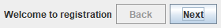
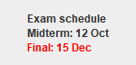

15.1 JLabel, JButton และ JPanel
| Component | ใช้ทำอะไร | เมธอดที่ใช้บ่อย |
|---|---|---|
JLabel | แสดงข้อความ (ผู้ใช้แก้ไม่ได้) | setText, getText, setFont, setForeground |
JButton | ปุ่มให้ผู้ใช้กด | setText, setEnabled, setToolTipText, addActionListener (บทที่ 16) |
JPanel | container จัดกลุ่ม | add, setLayout, setBorder, setBackground |
ตัวอย่าง 15.1.1 · label และปุ่มหลายสถานะ พื้นฐาน
แนวคิด: ปุ่มที่ setEnabled(false) จะเป็นสีเทาและกดไม่ได้ ใช้บอกผู้ใช้ว่ายังทำขั้นนั้นไม่ได้
Java source · LabelButtons.java
import javax.swing.*;
public class LabelButtons {
public static void main(String[] args) {
SwingUtilities.invokeLater(() -> {
JFrame frame = new JFrame("Step 1 of 3");
frame.setDefaultCloseOperation(JFrame.EXIT_ON_CLOSE);
JPanel panel = new JPanel();
panel.add(new JLabel("Welcome to registration"));
JButton back = new JButton("Back");
back.setEnabled(false);
JButton next = new JButton("Next");
next.setToolTipText("Go to step 2");
panel.add(back);
panel.add(next);
frame.add(panel);
frame.pack();
frame.setVisible(true);
});
}
}หน้าต่างที่ได้ (ภาพจากโปรแกรมจริง)

อธิบายทีละขั้น
- Back ถูกปิดเพราะอยู่หน้าแรก
- Next มี tooltip แสดงเมื่อเอาเมาส์ชี้
ตัวอย่าง 15.1.2 · label แบบ HTML และการจัดแนว ต่อยอด
แนวคิด: JLabel รับข้อความ HTML อย่างง่ายได้ (ขึ้นบรรทัดด้วย <br>, ตัวหนา, สี) และจัดแนวข้อความด้วย SwingConstants
Java source · HtmlLabel.java
import javax.swing.*;
import java.awt.*;
public class HtmlLabel {
public static void main(String[] args) {
SwingUtilities.invokeLater(() -> {
JFrame frame = new JFrame("Notice");
frame.setDefaultCloseOperation(JFrame.EXIT_ON_CLOSE);
JLabel label = new JLabel("<html><b>Exam schedule</b><br>Midterm: 12 Oct<br>"
+ "<font color='red'>Final: 15 Dec</font></html>");
label.setHorizontalAlignment(SwingConstants.CENTER);
label.setBorder(BorderFactory.createEmptyBorder(12, 30, 12, 30));
frame.add(label, BorderLayout.CENTER);
frame.pack();
frame.setVisible(true);
});
}
}หน้าต่างที่ได้ (ภาพจากโปรแกรมจริง)

อธิบายทีละขั้น
- ข้อความขึ้นต้น <html> จะถูกตีความเป็น HTML
- <br> ขึ้นบรรทัด <b> ตัวหนา <font color> สี
- ใช้เท่าที่จำเป็น: ข้อความธรรมดาอ่านและดูแลง่ายกว่า
ลองคิดก่อน · component
ต้องการแสดงผลลัพธ์การคำนวณที่ผู้ใช้ไม่ควรแก้ไข ควรใช้ JLabel หรือ JTextField
ดูคำตอบ
JLabel เหมาะที่สุด (หรือ JTextField ที่ setEditable(false) ถ้าต้องการให้ผู้ใช้คัดลอกข้อความได้)